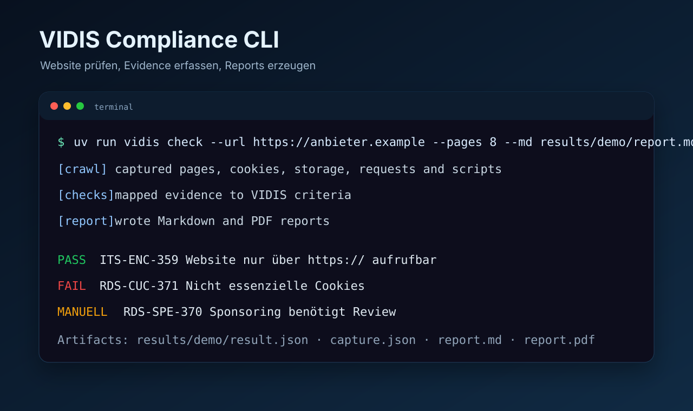
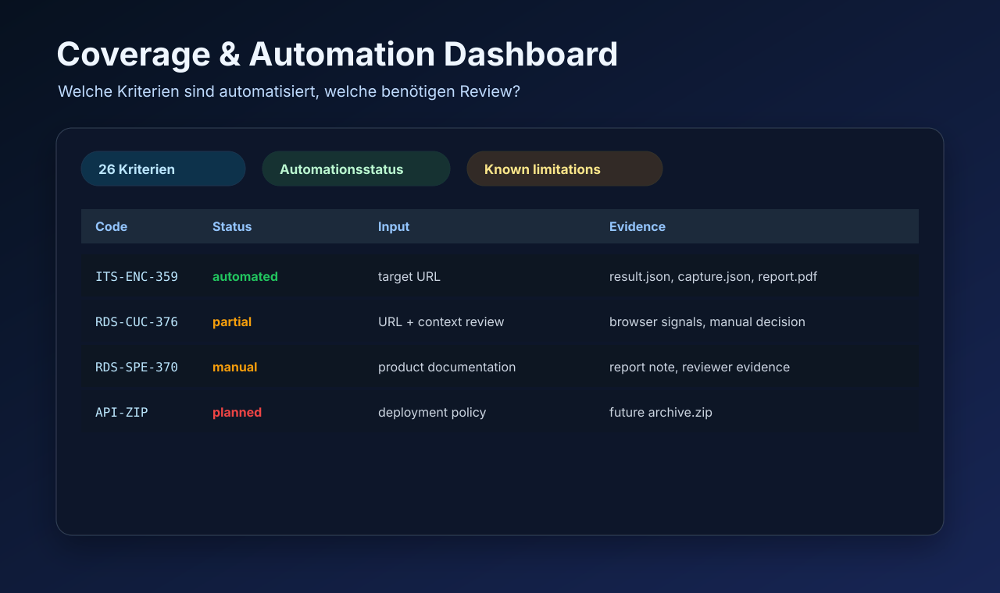

1. Setup
Voraussetzungen: Python 3.12+ und uv. Alle Befehle werden aus dem Repo-Root ausgeführt.
cd /path/to/vidis-compliance
uv sync
uv run pytest -qDas Tool schreibt Ergebnisse standardmäßig nach results/<job_id>/. Veröffentliche nur Artefakte, die keine Zugangsdaten oder personenbezogenen Testdaten enthalten.
2. Lokale CLI-Prüfung
Der zentrale Befehl ist vidis check. Er kann Website-, Code- und Dokument-Signale kombinieren.
Website prüfen
uv run vidis check \
--url https://example.com \
--pages 8 \
--audience beide \
--output example-site \
--md results/example-site/report.md \
--pdf results/example-site/report.pdfNur einzelne Prüfungen: --check wiederholen (ein Crawl derselben URL wird 30 Minuten wiederverwendet, --crawl-max-age 0 crawlt frisch), etwa uv run vidis check --url https://example.com --check site.transport --check site.legal_pages. uv run vidis checks listet alle IDs mit ihren Kriterien.
Quellcode-Durchsicht für Anbieter
uv run vidis check \
--code-path /path/to/vendor/repo \
--output vendor-code \
--md results/vendor-code/report.md \
--pdf results/vendor-code/report.pdf--code-path führt eine unterstützende Code-Durchsicht in demselben vidis check-Aufruf aus. Sie ist als Hilfe zur Selbstprüfung für Anbieter gedacht: Das Tool sucht VIDIS-relevante Quellcode-Signale wie Cookie-Schreibzugriffe, Browser-Storage, Tracking-/Analytics-Bibliotheken, Fingerprinting-APIs, externe Script-Quellen sowie Impressum-/Datenschutz-Links. Das ist ausdrücklich kein Audit, keine Zertifizierung und keine vollständige Security- oder Datenschutzprüfung.
Website und Quellcode gemeinsam prüfen
uv run vidis check \
--url https://example.com \
--code-path /path/to/vendor/repo \
--output vendor-combined \
--md results/vendor-combined/report.md \
--pdf results/vendor-combined/report.pdfBei kombinierten Läufen landen Website-, Browser- und Code-Signale in einem Bericht. Der Report enthält dann einen eigenen Abschnitt Code-Durchsicht für Anbieter mit Anzahl gescannter Dateien, Signalkategorien, auffälligen Beispielen und nächsten Schritten; betroffene Kriterien verweisen zusätzlich auf diesen Abschnitt.
Dokumente und URLs einbeziehen
uv run vidis check \
--url https://example.com \
--document ./docs/agb.pdf \
--document ./docs/avv.pdf \
--privacy-url https://example.com/datenschutz \
--agb-url https://example.com/agb \
--avv-url https://example.com/avv \
--output example-full \
--pdf results/example-full/report.pdf| Option | Bedeutung |
|---|---|
--url | Start-URL für Browser-/Website-Prüfung. |
--code-path | Lokales Repository oder Source-Verzeichnis für die unterstützende Code-Durchsicht. Die Ergebnisse werden als code_capture.json gespeichert und bei Markdown/PDF in einem eigenen Abschnitt Code-Durchsicht für Anbieter zusammengefasst. |
--pages | Maximale Anzahl eindeutig gecrawlter Seiten, default 8. URL-Varianten derselben Seite wie /, /index.html, Fragmente und Tracking-Parameter werden für Crawl und Screenshots dedupliziert. |
--audience | Zielgruppe: SuS, Lehrkraefte oder beide. |
--output | Job-ID/Ordnername unter results/. |
--document | Lokale HTML/PDF/Text-Dokumente; mehrfach nutzbar. |
--agb-url, --privacy-url, --avv-url | Remote-Dokumente für AGB, Datenschutz und AVV. |
--md, --pdf | Direkte Report-Ausgabe als Markdown/PDF. |
--lighthouse | Optionaler Lighthouse-Audit. Wenn die Lighthouse-CLI installiert ist, werden JSON-/HTML-Artefakte unter results/<job>/lighthouse/ erzeugt und im Report verlinkt. |
--webinspector-export | Erzeugt WebInspector-artige JSON-Exporte für Network-, Console-/Browser-Signale und Storage-Schlüssel unter results/<job>/webinspector/. |
--ai-model | Dokumentiert das verwendete KI-Modell im Report, z. B. openai:gpt-4.1-mini. Das Feld ist Transparenz-Metadatum; ohne Angabe wird kein Modell behauptet. |
Für RDS-CUC-371/RDS-CUC-372 bewertet der Website-Check Cookies, localStorage und sessionStorage gemeinsam. Namen werden gegen die gebündelte Open Cookie Database EDPB sowie erlaubte funktionale/security-nahe Speicher-Präfixe geprüft; Reports listen jeden gefundenen Cookie-, localStorage- und sessionStorage-Schlüssel in einer eigenen Nachweiszeile mit Einschätzung (essenziell, nicht essenziell oder manuell prüfen) sowie Quelle aus Open Cookie Database EDPB, Allowlist oder Heuristik. Die Datenbank wird als gebündelte Kopie ausgeliefert und kann über uv run python scripts/update_cookie_db.py aus der öffentlichen Quelle aktualisiert werden. Storage-Werte werden nicht ausgegeben. RDS-CUC-374 wird auf derselben Browser-Erfassung bewertet: keine LocalStorage-/SessionStorage-Schlüssel oder nur erlaubte Schlüssel ergeben PASS, nicht-essenzielle Tracking-/Analyse-Schlüssel ergeben für Schülerinnen und Schüler FAIL, unbekannte Schlüssel bleiben MANUELL zur Einordnung.
Für RDS-CUC-453 gleicht der Website-Check das beobachtete Cookie-/Storage-Inventar gegen verfügbare Datenschutzerklärungstexte aus --privacy-url oder passenden --document-Eingaben ab. PASS wird nur vergeben, wenn alle beobachteten Cookie-Namen, localStorage- und sessionStorage-Schlüssel oder dokumentierte Äquivalente beschrieben sind; klare fehlende Beschreibungen führen zu FAIL. Fehlt der Datenschutztext oder ist der semantische Abgleich unklar, bleibt das Kriterium MANUELL. Reports zeigen vollständige Matches/Misses, aber keine Storage-Werte.
Für RDS-CUC-375 sammelt der Browser- und Code-Check Zugriffe auf IndexedDB, Cache Storage und Service-Worker-Storage. Bekannte Tracker-/Device-Identifier-Signale werden für Schülerinnen und Schüler als FAIL markiert, eindeutig technische Speicherzwecke wie Session-, CSRF- oder Offline-App-Shell-Hinweise als PASS; generische API-Nutzung bleibt MANUELL und enthält im Report den vollständigen Kriteriumstext, beobachtete APIs/URLs und die offenen Prüffragen.
Für RDS-CUC-377 aggregiert der Check Cookies, bekannte Tracker-Requests/-Skripte, Storage-Schlüssel, Tracking-Pixel und Fingerprinting-Signale zu einem eigenen Entscheidungsweg. In SuS-Kontexten führen bekannte Werbe-/Analyse-/Trackermechanismen ohne belastbare pädagogische Zweck-Evidenz zu FAIL. Wird über lokale Dokumente oder AGB-/Datenschutz-/AVV-URLs ein adaptives Lernsystem, Lernstandsdiagnose oder eine andere pädagogische Notwendigkeit belegt, kann derselbe Tracking-Hinweis als pädagogisch eingeordnet werden; unklare Fälle bleiben MANUELL mit vollem Kriteriumstext.
Für RDS-IPF-364 bis RDS-IPF-367 sucht der Website-Check Impressum und Datenschutzerklärung, lädt die gefundenen Seiten und bewertet sie detaillierter anhand der aus dem VIDIS Checker übernommenen Pflichtpunkte. Beim Impressum werden unter anderem Name/Anschrift, Rechtsform und Vertretungsberechtigte, Kontaktangaben, Registerangaben, Steuer-ID/Wirtschafts-ID sowie ein aktueller DDG-Verweis geprüft; Aufsichtsbehörden und audiovisuelle Mediendienst-Angaben werden als manuell zu klärende Sonderfälle ausgewiesen. Bei der Datenschutzerklärung werden die Art.-13-DSGVO-Informationen wie Verantwortlicher, Datenschutzbeauftragter, Zwecke, Rechtsgrundlagen, Empfänger, Speicherdauer, Betroffenenrechte, Bereitstellungspflichten/Folgen und automatisierte Entscheidungsfindung/Profiling einzeln im Report aufgeführt. RDS-DSO-383 wird zusätzlich aus der Datenschutzerklärungsanalyse abgeleitet: Ein eindeutig gefundener Datenschutzbeauftragten-Kontakt ergibt PASS, eine explizite Aussage, dass kein Datenschutzbeauftragter benannt/bestellt ist, ergibt FAIL, und fehlende oder unklare Angaben bleiben MANUELL. Der Report nennt dazu die Datenschutz-URL, das gefundene oder fehlende Signal und die Herleitung aus Art. 13 Abs. 1 lit. b DSGVO mit Gesetzeslink.
Beispielansichten


3. Authentifizierter Agent-/Persona-Crawl
--agentic ist bewusst opt-in. Nutze diesen Modus, wenn eine Anwendung erst nach VIDIS-/Landesportal-Login relevante Bereiche zeigt: rechtliche Seiten nach Login, Schüler-/Lehrer-Dashboards, Registrierung oder Logout-Verhalten.
VIDIS_AGENT_USERNAME='user@example.test' \
VIDIS_AGENT_PASSWORD='***' \
VIDIS_AGENT_VIDIS_PORTAL='Test Landesportal' \
uv run vidis check \
--url https://app.example.test \
--agentic \
--agent-task legal \
--agent-task student \
--agent-persona SuS \
--agent-vidis-portal 'Test Landesportal' \
--agent-vidis-login-label 'Mit VIDIS einloggen' \
--agent-instruction 'Gehe auf Assistenten und prüfe die Übersicht' \
--pages 10 \
--output auth-scan- Unterstützte Tasks:
legal,student,teacher,register,logout. - Credentials kommen aus
--agent-username/--agent-passwordoderVIDIS_AGENT_USERNAME/VIDIS_AGENT_PASSWORD(nur CLI; über die API immer pro Job). - Für Broker-Flows mit vorgelagerter Portalauswahl wählt
--agent-vidis-portalbzw.VIDIS_AGENT_VIDIS_PORTALzuerst das gewünschte Landes-/Schulportal, zum BeispielTest Landesportal, und gibt erst danach Benutzername und Passwort ein. Der VIDIS-/SSO-Startbutton wird automatisch über typische Beschriftungen wieVIDIS,Schulportal,LandesportaloderSSOerkannt; bei abweichendem Text kann--agent-vidis-login-labelbzw.VIDIS_AGENT_VIDIS_LOGIN_LABELgesetzt werden. - Nach erfolgreichem Login verfolgt der Agent interne Clickpfade aus sichtbaren Links und dedupliziert besuchte URLs, bis
--pageserreicht ist. Mit wiederholbarem--agent-instructionkönnen natürlichsprachliche Hinweise priorisiert werden, etwaGehe auf Assistenten und prüfe die Übersicht. Nicht sichtbare oder nicht direkt klickbare interne Links werden zusätzlich über die interne Link-Discovery/Goto versucht. Bei--agent-task legalversucht der Agent automatisch typische Profil-/Benutzermenü- und Rechtsinfo-Pfade wie Profil, Konto, Impressum und Datenschutz; gefundene Kandidaten werden in den Report übernommen und bleiben alsMANUELL-Hinweis prüfbar. - Passwörter und tokenartige Felder werden aus JSON-Artefakten und Traces entfernt (
***REDACTED***). - Artefakte liegen unter
results/<job_id>/agent/:agent_capture.json,step_result.jsonl,screenshots/undpdfs/.
Agent-Mode ersetzt die deterministische Prüfung nicht: Bei --agentic läuft weiterhin der normale Website-Crawl mit den bestehenden Cookie-/Storage-/Tracking-/Werbe-/Jugendschutz-/HTTPS-/Impressum-Heuristiken. Der authentifizierte Agent ergänzt diese Ergebnisse um Login-, Rollen-, SPA-Clickpfad- und Screenshot-Evidenz. Automatische PASS/FAIL-Findings aus dem normalen Prüfpfad werden nicht durch generische Agent-MANUELL-Hinweise überschrieben; Agentic füllt vor allem Lücken und liefert Nachweise für gated App-Bereiche.
4. Reports aus bestehenden Ergebnissen erzeugen
Wenn bereits ein result.json existiert, erzeugt vidis-report daraus einen deutschen Markdown- oder PDF-Bericht.
uv run vidis-report \
--input results/example-full/result.json \
--capture results/example-full/capture.json \
--md results/example-full/report.md \
--pdf results/example-full/report.pdf--input akzeptiert entweder eine Job-ID unter results/ oder einen direkten Pfad zu result.json.
Markdown- und PDF-Reports listen immer alle VIDIS-Prüfkriterien. Kriterien, die im konkreten Lauf nicht automatisiert getestet wurden oder semantisch nicht belastbar automatisierbar sind, erscheinen als MANUELL mit dem vollständigen Kriteriumskontext: Code, Name, Bereich, Verbindlichkeit und Anforderungstext. Jedes Kriterium enthält zusätzlich eine anfängerfreundliche Einordnung mit Was bedeutet das?, Warum ist das relevant? und Nächste Schritte. Dadurch erklären unvollständige Bewertungen, etwa beim Impressum, konkret welche Angaben fehlen, warum sie wichtig sind und was als Nächstes mit Anbieter, Technik oder Datenschutzstelle geklärt werden sollte. Automatisch bewertete PASS/FAIL-Kriterien zeigen Bewertung, Einordnung und Nachweise. Wenn --ai-model übergeben wurde oder Capture-Daten KI-Metadaten enthalten, erscheint der Abschnitt KI-Modell-Transparenz mit Aufgabe, Anbieter, Modell und Status. Die drei HTTPS-/TLS-Kriterien ITS-ENC-359, ITS-ENC-360 und ITS-ENC-361 werden einmal in der Gemeinsamen HTTPS- und TLS-Bewertung zusammengefasst; die einzelnen Kriterien verweisen auf diesen Abschnitt. Cookies, localStorage und sessionStorage werden einmal in einer gemeinsamen Cookie- und Browser-Storage-Bewertung vor der Kriterienliste zusammengefasst; die einzelnen CUC-Kriterien verweisen darauf, statt dieselben Speicherzeilen mehrfach zu wiederholen. Wenn --code-path genutzt wurde, erscheint zusätzlich der Abschnitt Code-Durchsicht für Anbieter. Er fasst gescannte Dateien, Quellcode-Signale, auffällige Beispiele und nächste Schritte zusammen und stellt klar, dass diese Durchsicht nur die Selbstprüfung unterstützt und kein Audit, keine Zertifizierung sowie keine vollständige Security- oder Datenschutzprüfung ist. Bei Impressum, Datenschutzerklärung, AGB/AVV, Werbung, Jugendmedienschutz und vergleichbaren inhaltlichen Bewertungen enthält der Report einen Hinweis, dass es sich nur um eine KI-gestützte erste Einschätzung handelt und keine rechtliche oder datenschutzfachliche Prüfung ersetzt.
PDF-Reports enthalten eine KPI-Zusammenfassung, gekürzte Nachweise, Statusfarben, die Coverage Matrix und einen Screenshot-Anhang für öffentliche Website-Screenshots sowie lokale Agentic-Screenshots aus dem aktuellen Ergebnisordner. Vor dem Kriterienblock zeigt der PDF-Report zusätzlich eine kompakte Screenshot-Thumbnail-Übersicht: einbettbare Screenshots erscheinen als Miniaturkarten mit Label, URL und Dateiname, damit man schnell sieht, welche Seiten im Lauf erfasst wurden. Website-Screenshots werden mit einem breiten Browser-Viewport von ca. 1900×2100 px erfasst und im PDF-Anhang seitenbreit skaliert, damit Text gut lesbar bleibt und jeweils ein Screenshot auf eine A4-Seite passt. Explizit als local_only markierte Screenshots bleiben lokale Artefakte und werden nur referenziert. Falls --lighthouse oder --webinspector-export genutzt wurde, verlinken Markdown- und PDF-Reports zusätzlich die erzeugten JSON-/HTML-Artefakte.
5. Coverage Matrix
Die statische Matrix zeigt für jedes aktive VIDIS-Kriterium und jede Plattformfunktion, ob sie automatisiert ist, zusätzliche Eingaben benötigt, manuelle Prüfung erfordert oder noch nicht abgedeckt ist. Jeder vidis check-Lauf erzeugt die Matrix standardmäßig standalone im jeweiligen Ergebnisordner als coverage_matrix.json und coverage_matrix.html; PDF-Reports enthalten zusätzlich einen kompakten Coverage-Matrix-Anhang.
uv run vidis-report coverage \
--json docs/results/coverage_matrix.json \
--html docs/results/coverage_matrix.htmlÖffnen: docs/results/coverage_matrix.html. Die JSON-Datei daneben ist maschinenlesbar und enthält dieselben Spalten: platform status, input needed, automation level, evidence artifacts, CLI/API availability und known limitations.
Explizite Gap-Zeilen dokumentieren authentifizierte Persona-Crawls, Screenshot/Vision-Review, API-Auth/Jobliste/ZIP, FastAPI-Dokument-URLs, die RDS-SPE-370-Statusfrage und bei RDS-CUC-377 den Bedarf an Produktkontext für pädagogisches Tracking.
6. API für Automatisierung
Diese Anleitung liefert der Dienst selbst unter /manual/ aus, mit seiner eigenen Adresse in allen Beispielen. Die API-Referenz steht unter /docs.
Für Batch- oder Integrationsfälle läuft das Tool als API. Sie prüft mit denselben Prüfungen wie vidis check.
export VIDIS_API_KEYS='schluessel-1,schluessel-2'
uv run vidis serve --host 0.0.0.0 --port 8645Ohne VIDIS_API_KEYS startet vidis serve nur auf 127.0.0.1 und ist dort ohne Anmeldung offen. Auf jeder anderen Adresse verweigert der Server den Start. Läuft die API ohne Schlüssel und ohne VIDIS_AUTH_DISABLED=1, antworten alle Job-Endpunkte mit 503.
Anmeldung
Alle Endpunkte unter /jobs und POST /checks/<id> brauchen einen der Schlüssel aus VIDIS_API_KEYS (kommagetrennt, jeder Schlüssel hat vollen Zugriff), als Authorization: Bearer <key> oder X-API-Key: <key>. Ohne gültigen Schlüssel kommt 401. VIDIS_API_KEY mit einem einzelnen Schlüssel funktioniert weiterhin.
Jeder Schlüssel sieht nur die Jobs, die mit ihm angelegt wurden: Liste, Status, Ergebnisse, Artefakte, Berichte und ZIP. Fremde Jobs antworten mit 404, als gäbe es sie nicht. Schlüssel in VIDIS_ADMIN_KEYS (kommagetrennt) sehen alle Jobs, auch solche aus der Zeit vor dieser Trennung. Berichte über die API enthalten keine Screenshots aus angemeldeten Bereichen.
Ohne Schlüssel erreichbar: /health, /status, /discovery, /.well-known/vidis-checks, /criteria, GET /checks, /docs und /openapi.json.
Discovery: welche Prüfungen gibt es?
curl https://vidis-checker.example/discoveryDie Antwort listet unter checks jede Prüfung mit id, den abgedeckten Kriterien, den nötigen Eingaben (requires) und ob sie automatisch oder nur auf Wunsch läuft (enabled_by, z. B. agentic oder lighthouse). Unter criteria steht für jedes VIDIS-Kriterium, welche Prüfungen es abdecken. Dazu kommen Anmeldeverfahren, Endpunkte und ein Beispiel-Request. /.well-known/vidis-checks liefert dasselbe. Alle JSON-Antworten kommen eingerückt und als application/json; charset=utf-8, sind also auch direkt im Browser lesbar. Unter run steht bei jeder Prüfung der Endpunkt, der sie einzeln startet.
curl -X POST https://vidis-checker.example/jobs \
-H "Authorization: Bearer $VIDIS_KEY" \
-H 'Content-Type: application/json' \
-d '{"target_url":"https://anbieter.example","privacy_url":"https://anbieter.example/datenschutz","target_audience":"SuS","pages":8}'curl -X POST https://vidis-checker.example/jobs \
-H "X-API-Key: $VIDIS_KEY" \
-H 'Content-Type: application/json' \
-d '{"agb_url":"https://anbieter.example/agb","privacy_url":"https://anbieter.example/datenschutz","avv_url":"https://anbieter.example/avv"}'Einzelne Prüfungen ausführen
Ohne Auswahl laufen alle Prüfungen, die die Eingaben erlauben. Mit checks laufen nur die genannten Prüfungen, und das Ergebnis enthält nur deren Kriterien. Die IDs stehen in GET /discovery und GET /checks.
curl -X POST https://vidis-checker.example/jobs \
-H "X-API-Key: $VIDIS_KEY" \
-H 'Content-Type: application/json' \
-d '{"target_url":"https://anbieter.example","checks":["site.cookies","site.transport"]}'Für genau eine Prüfung gibt es einen eigenen Endpunkt. Er nimmt dieselben Eingaben wie POST /jobs, nur ohne checks, und antwortet ebenfalls mit einer Job-ID; Status und Bericht laufen wie bei jedem Job.
curl -X POST https://vidis-checker.example/checks/site.transport \
-H "X-API-Key: $VIDIS_KEY" \
-H 'Content-Type: application/json' \
-d '{"target_url":"https://anbieter.example"}'site.transport (HTTPS/TLS) und site.legal_pages (Impressum, Datenschutz) brauchen keinen Browser und sind allein deutlich schneller. Die übrigen site.*-Prüfungen werten denselben Browser-Crawl aus. Einzelne Prüfungen hintereinander crawlen die Website nur einmal: Ein Browser-Crawl derselben URL mit derselben Seitenzahl wird 30 Minuten lang wiederverwendet, samt Screenshots und deren KI-Bewertung. "crawl_max_age" (Sekunden, 0 bis 86400) ändert das je Job; 0 erzwingt einen frischen Crawl. Laufen mehrere Jobs für dieselbe Website gleichzeitig, crawlt nur einer; die anderen warten und nehmen sein Ergebnis. Die KI-Bewertung der Screenshots läuft nur, wenn eine gewählte Prüfung sie nutzt (site.advertising, site.outbound_ad_links, site.youth_protection oder alle Prüfungen ohne Auswahl), und dann ebenfalls nur einmal je Crawl. Ob ein Ergebnis aus dem Cache stammt, steht in capture.json unter crawl (cached, crawled_at, age_seconds). Eine unbekannte Prüfung oder eine fehlende Eingabe (etwa site.cookies ohne target_url) beantwortet die API mit 422, POST /checks/<id> mit einer unbekannten ID mit 404. agentic.persona_crawl und evidence.* in der Auswahl schalten den passenden Modus ein.
documents.analysis braucht nur die target_url: Der Dienst sucht AGB bzw. Nutzungsbedingungen, Datenschutzerklärung und AVV selbst, zuerst auf der Startseite, dann auf den dort verlinkten Rechtsseiten (gleiche Website, www. und ohne gelten als gleich). Mitgegebene agb_url, privacy_url oder avv_url haben Vorrang; gesucht wird nur, was fehlt. Was gefunden, gesucht und übersprungen wurde, steht in document_capture.json unter discovery und skipped. Findet der Dienst nichts, stehen die Dokumentkriterien auf MANUELL mit einem Hinweis. Seiten, die ihre Links erst per JavaScript aufbauen, findet die Suche nicht; dann die URLs mitgeben.
KI-Bewertung von Screenshots
Mit einem Google-Dienstkonto bewertet Gemini über Vertex AI die öffentlichen Screenshots eines Crawls auf sichtbare Werbung, Werbelinks, jugendgefährdende Inhalte, auffindbares Impressum und Datenschutz sowie Cookie-Banner. Die Einschätzung erscheint im Bericht als „Vision-Review“ beim jeweiligen Kriterium und ist als KI-Einschätzung mit Modellname gekennzeichnet; sie ändert keine PASS/FAIL-Ergebnisse. Screenshots aus angemeldeten Bereichen werden nie gesendet, pro Job höchstens acht.
GOOGLE_SA_JSON: Schlüssel des Dienstkontos als JSON-Text (alternativ Pfad inGOOGLE_APPLICATION_CREDENTIALS); das Konto braucht die Rolleroles/aiplatform.user.GOOGLE_CLOUD_PROJECT(Vorgabe: Projekt aus dem Schlüssel),GOOGLE_CLOUD_LOCATION(Vorgabeglobal).- Modelle je Aufgabe:
VIDIS_LLM_MODEL_STRONGfür Bewertungen wie die Screenshots (Vorgabegemini-4-hydrogen),VIDIS_LLM_MODEL_FASTfür einfache Aufgaben (Vorgabegemini-3.8-flash). Fehlt das starke Modell im Projekt, nimmt der Dienst das schnelle. VIDIS_LLM_DISABLED=1schaltet die KI ab.VIDIS_LLM_CONCURRENCY(Vorgabe 4, höchstens 8) legt fest, wie viele Screenshots gleichzeitig bewertet werden.
GET /health und GET /discovery zeigen unter llm, ob ein Modell eingerichtet ist und welches für welche Aufgabe gilt, ohne Zugangsdaten.
Dienststatus
curl https://vidis-checker.example/statusGET /status (ohne Schlüssel) fragt bei Vertex AI kostenlos ab, welche der eingerichteten Modelle für das Projekt verfügbar sind (Endpunkt countTokens, es wird nichts erzeugt), und zeigt je Modell available, HTTP-Status, Antwortzeit und Stufe (fast/strong). Das Ergebnis gilt zehn Minuten; ?refresh=true prüft neu, höchstens einmal pro Minute. Dazu kommen die Zahl der Jobs je Status, die Zahl paralleler Prüfungen und die Einträge im Crawl-Cache. Antwortet kein Modell, steht status auf degraded. /health bleibt eine billige Lebenszeichen-Abfrage und zeigt nur die letzte Modellprüfung, ohne selbst eine zu starten.
Rückruf, wenn ein Job fertig ist
Statt den Status abzufragen, kann man jedem Job (POST /jobs und POST /checks/<id>) eine callback_url mitgeben. Sobald der Job completed oder failed ist, schickt der Dienst dorthin einen POST mit JSON:
{
"event": "job.finished",
"job_id": "…",
"status": "completed",
"error": null,
"finished_at": "2026-11-26T08:30:00+00:00",
"checks": ["site.transport"],
"target_url": "https://anbieter.example/",
"summary": {"findings": 3, "PASS": 1, "FAIL": 2, "MANUELL": 0},
"links": {"job": "https://vidis-checker.example/jobs/…", "reports": "…", "archive": "…"}
}Der Rückruf enthält kein vollständiges Ergebnis; Details holt der Empfänger mit seinem API-Schlüssel über links.job. Mit callback_secret (16 bis 200 Zeichen, wird nicht gespeichert) ist der Rückruf signiert: X-VIDIS-Signature: sha256=<Hex> ist HMAC-SHA256 über <X-VIDIS-Timestamp>.<Body>. Weitere Header: X-VIDIS-Event, X-VIDIS-Delivery (gleich über alle Versuche).
curl -X POST https://vidis-checker.example/checks/site.transport \
-H "X-API-Key: $VIDIS_KEY" \
-H 'Content-Type: application/json' \
-d '{"target_url":"https://anbieter.example","callback_url":"https://empfaenger.example/vidis","callback_secret":"ein-langes-geheimnis-123"}'- Nur öffentliche
https-Adressen; interne Ziele werden mit422abgelehnt und vor jedem Versuch erneut geprüft. Weiterleitungen werden nicht verfolgt. - Eine Antwort 2xx gilt als zugestellt. Bei Netzfehlern, 5xx, 408 oder 429 folgen bis zu drei weitere Versuche (nach 5 s, 30 s und 2 min); andere 4xx brechen sofort ab.
GET /jobs/<id>zeigt untercallback, ob und wann zugestellt wurde, die Zahl der Versuche und den letzten HTTP-Status.- Die Links bauen auf
VIDIS_PUBLIC_URLauf; ohne sie auf der Adresse, unter der der Job angelegt wurde.
Job abfragen, Jobs auflisten, Bericht erzeugen
curl -H "X-API-Key: $VIDIS_KEY" 'https://vidis-checker.example/jobs?status=completed&limit=100&offset=0'
curl -H "X-API-Key: $VIDIS_KEY" https://vidis-checker.example/jobs/<job_id>
curl -X POST -H "X-API-Key: $VIDIS_KEY" https://vidis-checker.example/jobs/<job_id>/reports \
-H 'Content-Type: application/json' \
-d '{"format":"pdf"}'
curl -H "X-API-Key: $VIDIS_KEY" -o report.pdf https://vidis-checker.example/jobs/<job_id>/reports/report.pdf
curl -H "X-API-Key: $VIDIS_KEY" -o vidis-evidence.zip https://vidis-checker.example/jobs/<job_id>/archive.zipGET /jobs liefert eine begrenzte Übersicht persistierter Jobs mit optionalem status-Filter sowie limit/offset, ohne vollständige Ergebnisdaten einzubetten. Öffentliche Screenshot-Nachweise aus Website-Crawls erscheinen als screenshot_*-Artefaktlinks; Screenshots aus angemeldeten Bereichen bleiben auf dem Server und werden nicht per API ausgeliefert. Das ZIP-Archiv enthält nur erlaubte Dateien und Reports.
Agent-Mode per API
curl -X POST https://vidis-checker.example/jobs \
-H "X-API-Key: $VIDIS_KEY" \
-H 'Content-Type: application/json' \
-d '{"target_url":"https://app.example.test","agentic":true,"agent_tasks":["teacher","logout"],"agent_persona":"Lehrkraefte","agent_username":"user@example.test","agent_password":"***","agent_vidis_portal":"Test Landesportal","agent_instructions":["Gehe auf Assistenten und prüfe die Übersicht"]}'Das Passwort wird nur an den laufenden Job übergeben und nie in den Job-Metadaten gespeichert. Über die API bringt jeder Job seine eigenen Zugangsdaten mit: VIDIS_AGENT_USERNAME und VIDIS_AGENT_PASSWORD auf dem Server gelten nur für die CLI, weil API-Aufrufer die Zielseite bestimmen und sonst die hinterlegten Daten auf einer beliebigen Seite landen könnten. VIDIS_AGENT_VIDIS_PORTAL darf als Vorgabe gesetzt sein. Cookie- und Storage-Werte aus dem angemeldeten Bereich werden nicht gespeichert, nur Namen und Längen; aufgezeichnete URLs enthalten keine Parameter. Optional: agent_vidis_login_label, lighthouse, webinspector_export.
Eingabegrenzen
target_urlund Dokument-URLs müssen auf öffentliche Adressen zeigen; Ziele im internen Netz (localhost, private IP-Bereiche) werden mit422abgelehnt. Das gilt auch unterwegs: Jede Weiterleitung beim Abruf von Dokumenten und Rechtsseiten wird einzeln geprüft (höchstens fünf), und der Browser-Crawl lädt keine Seiten, Bilder oder Skripte von internen Adressen. Dokumente sind auf 15 MB begrenzt, Impressum- und Datenschutzseiten auf 3 MB.VIDIS_ALLOW_PRIVATE_TARGETS=1hebt die Adressprüfung für Testumgebungen auf.- Anfragen sind auf 256 KB begrenzt (sonst
413), Benutzernamen auf 200, Passwörter auf 500, Agent-Anweisungen auf 20 mit je 500 Zeichen,document_pathsauf 20 Einträge. - Ohne
VIDIS_ALLOWED_PATH_ROOTSlehnt ein Server mit API-Schlüsseln lokale Pfade ganz ab. - Schlägt ein Job fehl, steht unter
errornur eine für Aufrufer gedachte Meldung (etwa „HTTP 404 beim Abruf von …“ oder die Adressprüfung); interne Details landen im Server-Log. - Markdown-Berichte entschärfen Text aus geprüften Seiten und Dokumenten: rohes HTML und Bilder werden nicht dargestellt, Links bleiben anklickbar.
code_pathunddocument_pathssind Pfade auf dem Server. MitVIDIS_ALLOWED_PATH_ROOTS(im Container:/data/inputs) sind nur Pfade darunter erlaubt;noneschaltet lokale Pfade ganz ab.
Artefakte sind über /jobs/<job_id>/artifacts/result.json, capture.json, code_capture.json, document_capture.json, agent_capture.json und job.json abrufbar, sofern vorhanden.
Betrieb mit Docker und Coolify
Das Repository enthält ein Dockerfile (mit Chromium für die Browser-Prüfungen) und eine compose.yaml.
VIDIS_API_KEYS="$(openssl rand -hex 32)" docker compose up -d --buildIn Coolify als Anwendung mit dem Build-Pack Docker Compose anlegen, VIDIS_API_KEYS als Umgebungsvariable setzen und dem Dienst vidis-checker die Domain mit Port 8645 zuweisen. Ergebnisse liegen im Volume vidis-results, serverseitige Eingabedateien im Volume vidis-inputs. VIDIS_JOB_WORKERS (Standard 2) begrenzt parallele Prüfungen; jeder laufende Job startet einen eigenen Chromium.
7. Ergebnisse verstehen
Automatisch ausreichende Evidenz gefunden.
Automatisch klare Gegen-Evidenz gefunden.
Keine belastbare automatische Entscheidung; menschliche Prüfung nötig.
Aufbau eines Befunds
Jeder Befund in result.findings (API: GET /jobs/<id>) hat dieselben Felder. Die drei Status bleiben PASS, FAIL und MANUELL; reason unterscheidet, welche Art manueller Arbeit ein MANUELL bedeutet.
{
"criterion": "RDS-CUC-374",
"status": "MANUELL",
"reason": "needs_review",
"check": "site.browser_storage",
"note": "Unbekannter Browser-Storage: acme.widgetState",
"evidence": {"pages": ["https://anbieter.example/"], "local_storage_keys": ["acme.widgetState"], "session_storage_keys": []},
"review_hint": "Zweck der Storage-Schlüssel klären: funktional oder Tracking/Profilbildung?",
"artifacts": ["/jobs/<id>/artifacts/capture.json"]
}check: die Prüfung, die den Befund erzeugt hat;null, wenn keine Prüfung das Kriterium abdeckt.evidence: die Daten hinter dem Befund (Listen höchstens 50 Einträge, Texte höchstens 300 Zeichen). Welche Schlüssel vorkommen können, steht unten je Prüfung und in/discoveryunterchecks[].evidence_keys.review_hint: was bei MANUELL zu prüfen ist; bei PASS/FAIL leer.artifacts: Download-Links zu den vollständigen Belegen (mit API-Schlüssel), etwacapture.json,document_capture.jsonoder öffentliche Screenshots.
reason | Bedeutung |
|---|---|
automated | PASS oder FAIL wurde automatisch entschieden. |
needs_review | Die Prüfung lief, der Befund ist nicht eindeutig: ein Mensch entscheidet anhand von evidence, review_hint und artifacts. |
not_automated | Für das Kriterium gibt es keine automatische Prüfung; es ist immer manuell zu bewerten. |
missing_input | Eine Eingabe fehlte (etwa Dokument-URL oder Login), oder die zuständige Prüfung war nicht ausgewählt; die Notiz nennt was. |
not_reachable | Eine Seite oder ein Dokument war nicht abrufbar. |
Der Callback zählt die Befunde je Grund unter summary.reasons.
Welche Prüfungen ein Kriterium braucht
Wer entlang der Kriterien prüft, ruft je Kriterium die Prüfungen unter nötig mit der target_url auf, einzeln über POST /checks/<id> oder zusammen über POST /jobs mit checks. Optional ergänzt Belege, braucht aber Quellcode (code_path) oder einen Login (agentic). /discovery liefert dasselbe je Kriterium unter required_checks, optional_checks und run (fertiger Aufruf).
| Kriterium | Name | nötig | optional |
|---|---|---|---|
RDS-CDN-379 | CDN nur zur Bereitstellung von Inhalten | — (nur mit Quellcode oder manuell) | code.inspection |
RDS-CUC-371 | Nicht essenzielle Cookies | site.cookies | code.inspection, agentic.persona_crawl |
RDS-CUC-372 | Cookies allgemein | site.cookies | code.inspection, agentic.persona_crawl |
RDS-CUC-373 | Trackingpixel | site.tracking_pixel | code.inspection, agentic.persona_crawl |
RDS-CUC-374 | Local Browser Storage | site.browser_storage | code.inspection, agentic.persona_crawl |
RDS-CUC-375 | Informationen auf der Endeinrichtung des Endnutzers | site.device_storage | code.inspection, agentic.persona_crawl |
RDS-CUC-376 | Browserfingerprints | site.fingerprinting | code.inspection, agentic.persona_crawl |
RDS-CUC-377 | Trackingmechanismen zu nicht pädagogischen Zwecken | site.tracking_mechanisms, documents.analysis | code.inspection, agentic.persona_crawl |
RDS-CUC-453 | Beschreibung aller Cookies | site.cookie_descriptions | documents.analysis, agentic.persona_crawl |
RDS-DEV-380 | Datenerhebung und -verarbeitung | documents.analysis | code.inspection |
RDS-DEV-381 | Umgang mit Daten nach Beendigung der Zusammenarbeit | documents.analysis | — |
RDS-DEV-466 | Sichere Datenverarbeitung | documents.analysis | — |
RDS-DSO-383 | Benennung eines Datenschutzbeauftragten | documents.analysis | agentic.persona_crawl |
RDS-IPF-364 | Leicht auffindbares Impressum | site.legal_pages | code.inspection, agentic.persona_crawl |
RDS-IPF-365 | Leicht auffindbare Datenschutzerklärung | site.legal_pages | code.inspection, agentic.persona_crawl |
RDS-IPF-366 | Vollständiges Impressum | site.legal_pages | agentic.persona_crawl |
RDS-IPF-367 | Vollständige Datenschutzerklärung | site.legal_pages | agentic.persona_crawl |
RDS-AGB-368 | Nutzungsbedingungen/AGB: Datenschutzkonform | documents.analysis | — |
RDS-AGB-369 | Nutzungsbedingungen/AGB: AVV-konform | documents.analysis | — |
RDS-SPE-370 | Sponsoring | documents.analysis | — |
RDS-VIN-354 | Jugendmedienschutz | site.youth_protection | agentic.persona_crawl |
RDS-WER-384 | Werbefreiheit | site.advertising | agentic.persona_crawl |
RDS-WER-385 | Verweise auf Werbeinhalte | site.outbound_ad_links | agentic.persona_crawl |
ITS-ENC-359 | Website nur über https:// aufrufbar | site.transport | — |
ITS-ENC-360 | Es sind Umleitungen von http auf https konfiguriert. | site.transport | — |
ITS-ENC-361 | Ablehnen veralteter TLS/SSL-Protokolle | site.transport | — |
Mögliche Ergebnisse je Prüfung
Diese Tabelle steht maschinenlesbar in /discovery und /checks unter outcomes und evidence_keys. Zusätzlich kann jedes Kriterium MANUELL mit missing_input sein, wenn die zuständige Prüfung im Lauf fehlte (etwa RDS-CUC-453 bei documents.analysis allein: dafür site.cookie_descriptions aufrufen), oder mit not_reachable, wenn eine Seite nicht abrufbar war.
| Prüfung | Status | reason | Wann | evidence |
|---|---|---|---|---|
site.cookiesRDS-CUC-371, RDS-CUC-372 | PASS | automated | Alle Cookies und Storage-Einträge sind laut Open Cookie Database oder Allowlist technisch notwendig. | pages, cookies |
| FAIL | automated | Nicht notwendige Cookies bei Zielgruppe SuS oder beide. | ||
| MANUELL | needs_review | Nicht notwendige Cookies bei Zielgruppe Lehrkräfte (Einwilligung?), unbekannte Cookies oder gar keine Cookies erkannt. | ||
site.tracking_pixelRDS-CUC-373 | PASS | automated | Keine bekannten Tracker in den Anfragen. | pages, third_party_hosts, requests |
| FAIL | automated | Tracker erkannt bei Zielgruppe SuS oder beide. | ||
| MANUELL | needs_review | Tracker erkannt bei Zielgruppe Lehrkräfte (Einwilligung?). | ||
site.browser_storageRDS-CUC-374 | PASS | automated | Kein Local/Session Storage, oder alle Schlüssel sind als notwendig bekannt. | pages, local_storage_keys, session_storage_keys |
| FAIL | automated | Nicht notwendige Schlüssel bei Zielgruppe SuS oder beide. | ||
| MANUELL | needs_review | Unbekannte Schlüssel, oder nicht notwendige bei Zielgruppe Lehrkräfte. | ||
site.device_storageRDS-CUC-375 | PASS | automated | Keine oder nur technisch nötige Zugriffe auf IndexedDB, Cache Storage, Service Worker. | pages, browser_signals |
| FAIL | automated | Tracking-Zugriffe bei Zielgruppe SuS oder beide. | ||
| MANUELL | needs_review | Zweck der Zugriffe nicht bestimmbar, oder Tracking bei Zielgruppe Lehrkräfte. | ||
site.fingerprintingRDS-CUC-376 | PASS | automated | Keine Fingerprinting-APIs (Canvas, WebGL, AudioContext …) aufgerufen. | pages, browser_signals |
| MANUELL | needs_review | Solche APIs wurden aufgerufen; ob zum Fingerprinting, muss ein Mensch beurteilen. | ||
site.tracking_mechanismsRDS-CUC-377 | PASS | automated | Keine Trackingmechanismen, oder die Produktdokumente nennen einen pädagogischen Zweck. | pages, third_party_hosts, requests |
| FAIL | automated | Tracking ohne belegten pädagogischen Zweck bei Zielgruppe SuS oder beide. | ||
| MANUELL | needs_review | Tracking bei Zielgruppe Lehrkräfte oder Zweck unklar. | ||
site.cookie_descriptionsRDS-CUC-453 | PASS | automated | Jedes gefundene Cookie und jeder Storage-Schlüssel steht in der Datenschutzerklärung. | pages, observed, present, missing |
| FAIL | automated | Mindestens eines fehlt in der Datenschutzerklärung (in evidence.missing). | ||
| MANUELL | needs_review | Keine Cookies oder Storage-Einträge gefunden, also nichts abzugleichen. | ||
| MANUELL | missing_input | Keine Datenschutzerklärung gefunden oder mitgegeben (privacy_url). | ||
site.advertisingRDS-WER-384 | PASS | automated | Keine Werbenetzwerke, Anzeigen-Widgets oder Sponsoring-Hinweise. | pages, vision_reviews |
| FAIL | automated | Werbesignale erkannt. | ||
site.outbound_ad_linksRDS-WER-385 | PASS | automated | Keine Affiliate- oder Werbelinks erkannt. | pages, external_links, vision_reviews |
| MANUELL | needs_review | Mögliche Werbelinks; Ziel prüfen. | ||
site.youth_protectionRDS-VIN-354 | PASS | automated | Keine 18+-, Glücksspiel-, Gewalt- oder riskanten Embed-Signale. | pages, vision_reviews |
| FAIL | automated | Risikosignale erkannt. | ||
| MANUELL | needs_review | Eingebettete Inhalte, die ein Mensch ansehen muss. | ||
site.transportITS-ENC-359, ITS-ENC-360, ITS-ENC-361 | PASS | automated | HTTPS erreichbar, HTTP leitet um oder ist zu, alte TLS-Versionen abgelehnt. | pages |
| FAIL | automated | HTTP liefert Inhalte ohne Umleitung, HTTPS fehlt oder alte TLS-Versionen werden angenommen. | ||
| MANUELL | needs_review | TLS-Versionen ließen sich nicht prüfen (ITS-ENC-361). | ||
site.legal_pagesRDS-IPF-364, RDS-IPF-365, RDS-IPF-366, RDS-IPF-367 | PASS | automated | Impressum/Datenschutzerklärung gefunden, erreichbar und mit den Pflichtangaben. | impressum_url, privacy_url, impressum_found, impressum_missing, impressum_manual, privacy_found, privacy_missing, privacy_manual, privacy_dpo_absent_declared, visited_urls |
| FAIL | automated | Nicht gefunden, nicht erreichbar oder Pflichtangaben fehlen (in evidence.*_missing). | ||
code.inspectionRDS-CDN-379, RDS-CUC-371, RDS-CUC-372, RDS-CUC-373, RDS-CUC-374, RDS-CUC-375, RDS-CUC-376, RDS-CUC-377, RDS-DEV-380, RDS-IPF-364, RDS-IPF-365 | PASS | automated | Keine einschlägigen Signale im Quellcode. | files_scanned |
| FAIL | automated | Einschlägige Signale gefunden, oder der Code-Pfad existiert nicht. | ||
| MANUELL | needs_review | Signale gefunden, deren Zweck ein Mensch beurteilen muss. | ||
documents.analysisRDS-DEV-380, RDS-DEV-381, RDS-DEV-466, RDS-DSO-383, RDS-AGB-368, RDS-AGB-369, RDS-SPE-370, RDS-CUC-377, RDS-CUC-453 | PASS | automated | Ausdrückliche Regelung im Dokument gefunden (Textstellen in evidence.snippets). | documents, snippets, discovery, skipped |
| FAIL | automated | Das Dokument widerspricht dem Kriterium. | ||
| MANUELL | needs_review | Dokument gelesen, aber keine ausdrückliche Regelung gefunden. | ||
| MANUELL | missing_input | Keine AGB, Datenschutzerklärung oder AVV gefunden; URL mitgeben. | ||
agentic.persona_crawlRDS-CUC-371, RDS-CUC-372, RDS-CUC-373, RDS-CUC-374, RDS-CUC-375, RDS-CUC-376, RDS-CUC-377, RDS-CUC-453, RDS-WER-384, RDS-WER-385, RDS-VIN-354, RDS-IPF-364, RDS-IPF-365, RDS-IPF-366, RDS-IPF-367, RDS-DSO-383 | PASS | automated | Belege aus dem angemeldeten Bereich bestätigen das Kriterium. | visited_urls |
| FAIL | automated | Belege aus dem angemeldeten Bereich widersprechen ihm. | ||
| MANUELL | needs_review | Belege gesammelt, ein Mensch muss sie beurteilen. |
Typische Dateien
results/<job_id>/result.json– maschinenlesbare Findings pro VIDIS-Kriterium, im Aufbau wie oben.results/<job_id>/capture.json– Browser-/Website-Signale wie Requests, Cookies, Storage, Scripts, Screenshot-Metadaten und konservative Vision-Review-Hinweise.results/<job_id>/screenshots/*.png– öffentliche Screenshot-Belege; authentifizierte Screenshots werden alslocal_onlymarkiert und nicht über die API ausgeliefert.results/<job_id>/code_capture.json– statische Code-Signale.results/<job_id>/document_capture.json– extrahierte Dokument-Snippets.results/<job_id>/agent/step_result.jsonlundagent_capture.json– replaybarer Agent-Trace, besuchte URLs, Aktionen, Requests, Cookies/Storage und Artefaktpfade.report.md/report.pdf– menschenlesbarer deutscher Bericht.
MANUELL ist kein Fehler. Es bedeutet, dass das Tool konservativ bleibt und keine automatische Aussage vortäuscht.
8. Troubleshooting
CLI zeigt veraltete Kommandos
Aktuell gibt es vidis check, vidis serve und vidis-report. Separate Unterbefehle wie check-url sind nicht gültig.
Browser-/Website-Checks schlagen fehl
- URL mit
https://angeben. --pagesreduzieren, wenn der Crawl zu lange dauert.- Bei Captcha/Login/Walled-Garden bleiben Kriterien erwartbar
MANUELL.
PDF ist leer oder fehlt
- Prüfen, ob
result.jsonexistiert. uv run vidis-report report --input results/<job_id>/result.json --pdf results/<job_id>/report.pdferneut ausführen.
Regressionstest
uv run pytest -q
uv run python -m vidis_compliance.report_cli report --input quick --md results/quick/report-v2.md --pdf results/quick/report-v2.pdf